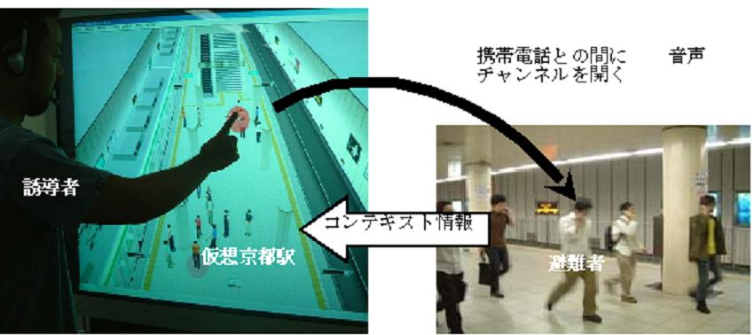
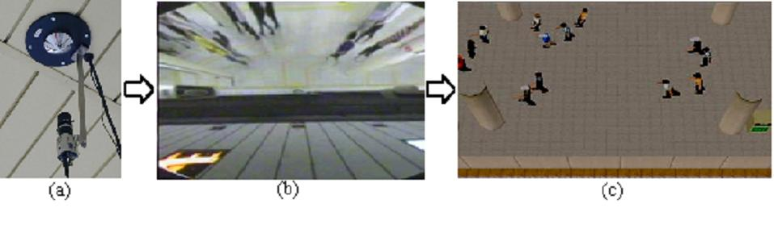

駅などの多勢が利用する公共空間における避難誘導は，放送設備と現地の係員によって行われる．放送設備が全体的な誘導を提供する一方，現地の係員は局所的な誘導を提供する．放送設備は遠隔から多勢の人間に指示できる利便性の高い誘導手段であるが，その場の状況に特化した局所的な指示を与えるのには向いていない．そこで我々は，「遠隔から多勢の人間に局所的な指示を与える」新しいコミュニケーション様式として「超越型コミュニケーション」を考案した．これは，超越的に多勢の人間がいる空間全体を眺めつつ対話相手を選択する様式である．そして，この様式による避難誘導，すなわち超越型誘導を可能にするシステムを開発した．このシステムの特徴は，携帯電話と仮想都市を用いている点である．放送設備と異なり，携帯電話は局所的な個別のコミュニケーションを可能にする．また，監視カメラ映像と異なり，現地の様子がリアルタイムでシミュレートされる仮想都市は任意の視界を映し出すことで指示対象の特定を容易にする．
超越型誘導には避難群集のいる空間を遠隔の指令室などから一望でき，この視界を通して局所的指示を与える対象を直接的に選択できるシステムが必要となる．この条件を満たすようにFreeWalkを拡張して超越型誘導システムを開発した．図1は，超越型誘導システムを使用して地下鉄のプラットフォームにいる人々に指示を与えている様子である．大型タッチスクリーンの前に立っているのは超越的参加者である誘導者である．駅の指令室にいる係員などを想定している．大型スクリーンにはFreeWalkが描画する仮想的なプラットフォーム空間が表示されている．そして，その仮想都市空間の中で多数の人体モデルが歩いている．これらの人体モデルは実際にプラットフォームにいる人々のコンテキスト情報を反映している．このように誘導者は現実空間の状況を把握できる．

図１．超越型誘導システム
図1で誘導者は人体モデルを指差している．指差しをタッチスクリーンが検知すると誘導者のマイクが人体モデルに該当する避難者の携帯電話とつながるようになっている．携帯電話とFreeWalkの接続には音声応答ボードを用いている．人体モデルと電話番号の対応は，無線ICタグや光学マーカなどによってあらかじめ分かっているものとする．このような直接的な指示対象の選択が画面に映し出される仮想都市空間上で行え，誘導者のマイクを任意の避難群集の携帯電話と同時につなぐことが可能になっている．
我々は超越型誘導システムを京都駅に設置した．設置のためにまず京都駅の3Dモデルを，図面から起こした単純な幾何モデルにデジタルカメラで撮影した写真を貼りつけて作成した．この方法によって作成コストを低く抑えることができ，同時に衝突判定の計算コストも低く抑えることができた．
次に，京都駅に視覚センサーネットワークを配備してFreeWalkを接続し，コンテキスト情報の取得を可能にした．この視覚センサーは図2(a) のとおり，CCDカメラと特殊な形状の反射鏡から構成されている．この反射鏡は，公共空間全体を視覚センサーによって安価に覆うのに有効な役割を果たしている．一つのカメラの画角を広げれば，少ない数のカメラで公共空間全体を覆うことができる．しかし，通常のカメラで画角を広げると画像が歪曲してしまう．我々の視覚センサーは特殊な反射鏡を備えることで，図2(b) に示すように，この歪みを回避している．具体的には，カメラの光軸に直交する平面を透視投影で撮影できるよう反射鏡が設計されている．図2(c) は，図2(b)の画像から背景差分等の手法を用いて群集の位置を検出し，FreeWalk上に可視化した結果である．京都駅のような屋内の公共空間ではGPS が使用できないため，視覚センサーのような何らかの代替手段が必要となる．

図２．視覚センサーによるコンテキスト情報の取得
文献：
Hideyuki Nakanishi, Satoshi Koizumi, Toru Ishida and Hideaki Ito. Transcendent Communication: Location-Based Guidance for Large-Scale Public Spaces. International Conference on Human Factors in Computing Systems (CHI2004), pp. 655-662, 2004.
連絡先：
京都大学 社会情報学専攻 中西英之 nakanishi at i.kyoto-u.ac.jp